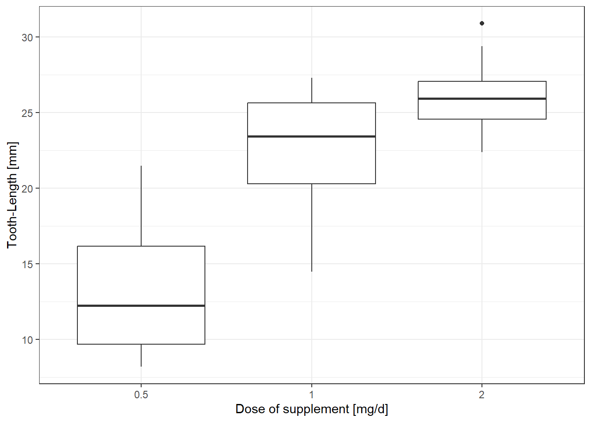
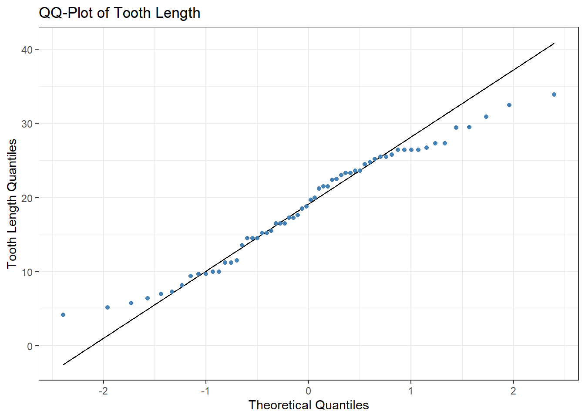

library(tidyverse)
library(unibeCols)
library(usethis)
library(remotes)
library(gitcreds)
library(here)
library(medicaldata)
library(cowplot)
library(readr)
library(lubridate)
library(dplyr)
library(ggplot2)
library(gtsummary)
library(rstatix)Final Assessment Report
Introduction (Dataset-Info)
The dataset “ToothGrowth” already built into R was used for this assessment.
The response is the length of odontoblasts (cells responsible for tooth growth) in 60 guinea pigs. Each animal received one of three dose levels of vitamin C (0.5, 1, and 2 mg/day) by one of two delivery methods, orange juice or ascorbic acid (a form of vitamin C and coded as VC). C. I. Bliss (1952). The Statistics of Bioassay
From this description, one possible hypothesis could be:
For equivalent doses, there is a difference in the length of odontoblasts depending on which supplement the guinea pigs receive.
With the corresponding Null-Hypothesis that there is no difference in length of odontoblasts
Materials and Methods (Requirements in R(Studio)
The following packages were installed and loaded to work with the data.
(Detailed information on used versions of R(Studio) and packages installed to reproduce the data are summarized in the “sessionInfo” at the end of this report.)
- Coding:
- len = Length of Odontoblasts
- supp = Supplement Type
- OJ = Orange Juice
- VC = Vitamin C
- dose = Dose used for application of supplement in mg/d
Descriptive Statistics
The dataset “ToothGrowth” was examined using the functions “view” and “str”
Show the code
data("ToothGrowth")
view(ToothGrowth)
str(ToothGrowth)'data.frame': 60 obs. of 3 variables:
$ len : num 4.2 11.5 7.3 5.8 6.4 10 11.2 11.2 5.2 7 ...
$ supp: Factor w/ 2 levels "OJ","VC": 2 2 2 2 2 2 2 2 2 2 ...
$ dose: num 0.5 0.5 0.5 0.5 0.5 0.5 0.5 0.5 0.5 0.5 ...We can have a first look at means in different supplement groups and by different dosages using the function “summarize”:
Show the code
ToothGrowth %>%
group_by(supp, dose) %>%
summarize(mean(len))# A tibble: 6 × 3
# Groups: supp [2]
supp dose `mean(len)`
<fct> <dbl> <dbl>
1 OJ 0.5 13.2
2 OJ 1 22.7
3 OJ 2 26.1
4 VC 0.5 7.98
5 VC 1 16.8
6 VC 2 26.1 Summary Table
Figure 1 shows means and standard deviations (SD) for the three doses of the supplement Orange Juice.
Show the code
data_OJ <- ToothGrowth %>%
filter(supp == "OJ")
data_OJ %>%
select(len, dose) %>%
tbl_summary(
by = dose,
label = list(len ~ "Tooth Length [mm]"),
statistic = list(all_continuous() ~ "{mean} ({sd})"),
digits = list(len ~ c(1, 1))) %>%
add_overall()| Characteristic | Overall, N = 301 | 0.5, N = 101 | 1, N = 101 | 2, N = 101 |
|---|---|---|---|---|
| Tooth Length [mm] | 20.7 (6.6) | 13.2 (4.5) | 22.7 (3.9) | 26.1 (2.7) |
| 1 Mean (SD) | ||||
Boxplot
Figure 2 shows the distribution of obtained values for Tooth-Length for the supplement orange juice. While there is a big difference in the median values for doses 0.5 and 1, median tooth-length for dose 2 is only slightly higher than for dose 1. One outlier with a length of over 30mm stands out for dose 3.
Show the code
data_OJ <- data_OJ %>%
mutate(dose_f = as.factor(as.character(dose)))
data_OJ %>%
ggplot(aes(dose_f, len)) +
geom_boxplot() +
xlab(label = "Dose of supplement [mg/d]") +
ylab(label = "Tooth-Length [mm]") +
theme_bw() + theme(legend.position="bottom") 
Analysis and Discussion
Normality Testing
QQ-Plot
Figure 3 shows a Quantile-Quantile (QQ)-Plot. Data appears to follow a normal distribution.
Show the code
ToothGrowth %>%
ggplot(aes(sample = len)) +
geom_qq_line(distribution = stats::qnorm) +
geom_qq(color = "steelblue", distribution = stats::qnorm) +
xlab("Theoretical Quantiles") +
ylab("Tooth Length Quantiles") +
theme_bw() +
ggtitle(label = "QQ-Plot of Tooth Length")
Shapiro-Wilk Test
As sample size for this dataset is rather small (< 50), a Shapiro-Wilk Test was performed in order to test
if the data follows a normal distribution. Testing subsets of data individually and all tooth-length data, resulting p-values indicate that the Null-Hypothesis of Normality cannot be rejected. In other words, the data is normally distributed.
Show the code
data_OJ_0.5 <- data_OJ %>%
filter(dose == 0.5)
data_OJ_1 <- data_OJ %>%
filter(dose == 1)
data_OJ_2 <- data_OJ %>%
filter(dose == 2)
data_VC_0.5 <- data_OJ %>%
filter(dose == 0.5)
data_VC_1 <- data_OJ %>%
filter(dose == 1)
data_VC_2 <- data_OJ %>%
filter(dose == 2)
shapiro.test(data_OJ_0.5$len)
Shapiro-Wilk normality test
data: data_OJ_0.5$len
W = 0.89274, p-value = 0.182Show the code
shapiro.test(data_OJ_1$len)
Shapiro-Wilk normality test
data: data_OJ_1$len
W = 0.9266, p-value = 0.4153Show the code
shapiro.test(data_OJ_2$len)
Shapiro-Wilk normality test
data: data_OJ_2$len
W = 0.96258, p-value = 0.8148Show the code
shapiro.test(data_VC_0.5$len)
Shapiro-Wilk normality test
data: data_VC_0.5$len
W = 0.89274, p-value = 0.182Show the code
shapiro.test(data_VC_1$len)
Shapiro-Wilk normality test
data: data_VC_1$len
W = 0.9266, p-value = 0.4153Show the code
shapiro.test(data_VC_2$len)
Shapiro-Wilk normality test
data: data_VC_2$len
W = 0.96258, p-value = 0.8148Show the code
shapiro.test(ToothGrowth$len)
Shapiro-Wilk normality test
data: ToothGrowth$len
W = 0.96743, p-value = 0.1091Comparison of supplements (2-sample t-test)
As the two different supplement groups are independent and data is normally distributed, a 2-sample t-test was chosen to compare means of these groups. There is strong evidence for a difference in tooth length for doses 0.5 and 1. For these doses and most likely also for doses in between the two, tooth length was greater in groups supplemented with orange juice when compared to vitamin c. As for dose 2, there is no evidence of a difference in tooth length.
Show the code
dose_0.5 <- ToothGrowth %>%
filter(dose == 0.5)
dose_1 <- ToothGrowth %>%
filter(dose == 1)
dose_2 <- ToothGrowth %>%
filter(dose == 2)
dose_0.5 %>%
t_test(len ~ supp)# A tibble: 1 × 8
.y. group1 group2 n1 n2 statistic df p
* <chr> <chr> <chr> <int> <int> <dbl> <dbl> <dbl>
1 len OJ VC 10 10 3.17 15.0 0.00636Show the code
dose_1 %>%
t_test(len ~ supp)# A tibble: 1 × 8
.y. group1 group2 n1 n2 statistic df p
* <chr> <chr> <chr> <int> <int> <dbl> <dbl> <dbl>
1 len OJ VC 10 10 4.03 15.4 0.00104Show the code
dose_2 %>%
t_test(len ~ supp) # A tibble: 1 × 8
.y. group1 group2 n1 n2 statistic df p
* <chr> <chr> <chr> <int> <int> <dbl> <dbl> <dbl>
1 len OJ VC 10 10 -0.0461 14.0 0.964Appendix - Session Info
Show the code
sessionInfo()R version 4.2.2 (2022-10-31 ucrt)
Platform: x86_64-w64-mingw32/x64 (64-bit)
Running under: Windows 10 x64 (build 19045)
Matrix products: default
locale:
[1] LC_COLLATE=German_Switzerland.utf8 LC_CTYPE=German_Switzerland.utf8
[3] LC_MONETARY=German_Switzerland.utf8 LC_NUMERIC=C
[5] LC_TIME=German_Switzerland.utf8
attached base packages:
[1] stats graphics grDevices utils datasets methods base
other attached packages:
[1] rstatix_0.7.2 gtsummary_1.7.1 cowplot_1.1.1 medicaldata_0.2.0
[5] here_1.0.1 gitcreds_0.1.2 remotes_2.4.2 usethis_2.2.0
[9] unibeCols_0.0.2 lubridate_1.9.2 forcats_1.0.0 stringr_1.5.0
[13] dplyr_1.1.2 purrr_1.0.1 readr_2.1.4 tidyr_1.3.0
[17] tibble_3.2.1 ggplot2_3.4.2 tidyverse_2.0.0
loaded via a namespace (and not attached):
[1] tidyselect_1.2.0 xfun_0.39 carData_3.0-5
[4] colorspace_2.1-0 vctrs_0.6.2 generics_0.1.3
[7] htmltools_0.5.5 yaml_2.3.7 utf8_1.2.3
[10] rlang_1.1.1 pillar_1.9.0 glue_1.6.2
[13] withr_2.5.0 lifecycle_1.0.3 commonmark_1.9.0
[16] munsell_0.5.0 gtable_0.3.3 htmlwidgets_1.6.2
[19] evaluate_0.21 labeling_0.4.2 knitr_1.43
[22] tzdb_0.4.0 fastmap_1.1.1 markdown_1.7
[25] fansi_1.0.4 broom_1.0.5 backports_1.4.1
[28] scales_1.2.1 jsonlite_1.8.5 abind_1.4-5
[31] farver_2.1.1 fs_1.6.2 hms_1.1.3
[34] digest_0.6.31 stringi_1.7.12 grid_4.2.2
[37] rprojroot_2.0.3 cli_3.6.1 tools_4.2.2
[40] sass_0.4.6 magrittr_2.0.3 car_3.1-2
[43] pkgconfig_2.0.3 broom.helpers_1.13.0 xml2_1.3.4
[46] timechange_0.2.0 gt_0.9.0 rmarkdown_2.22
[49] rstudioapi_0.14 R6_2.5.1 compiler_4.2.2